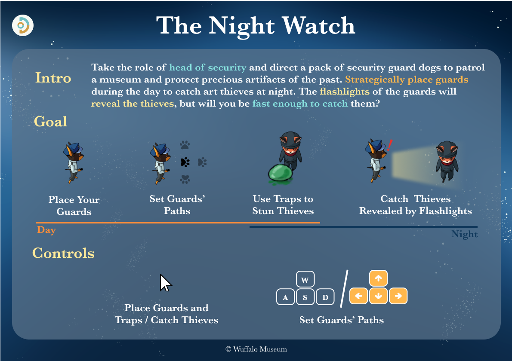
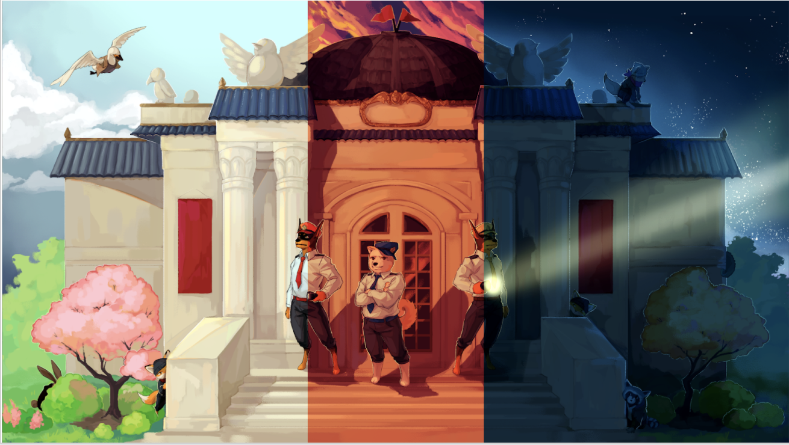
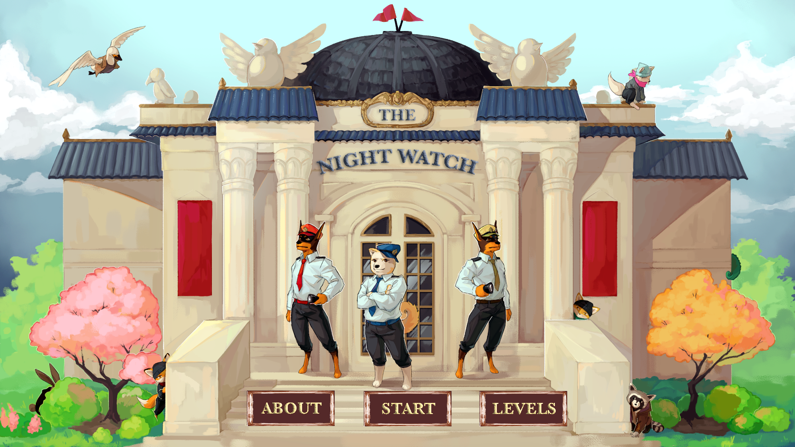
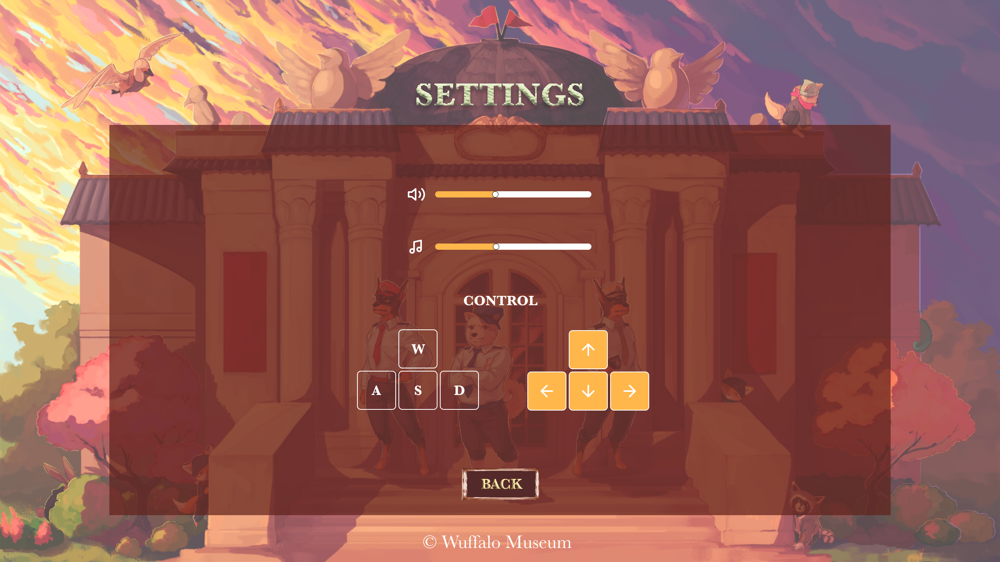
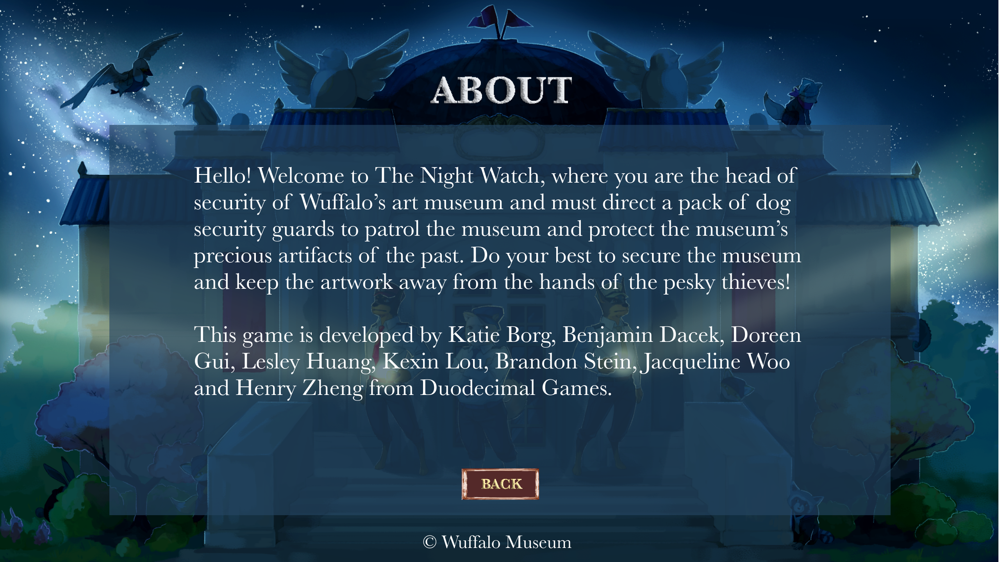
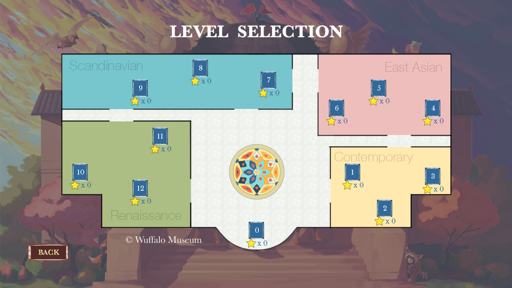
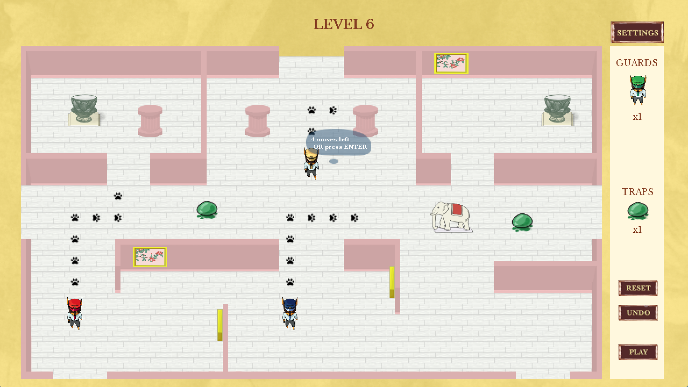
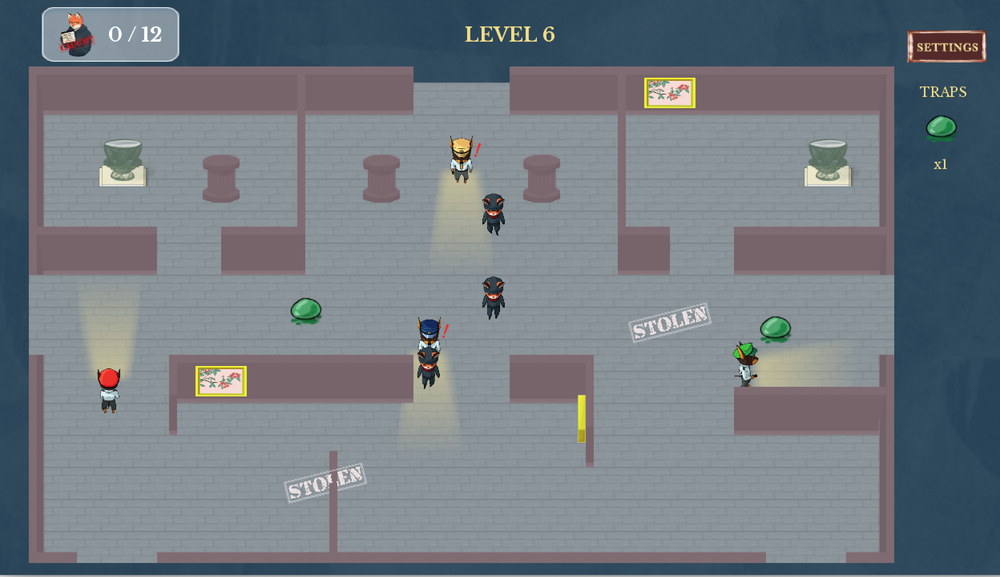
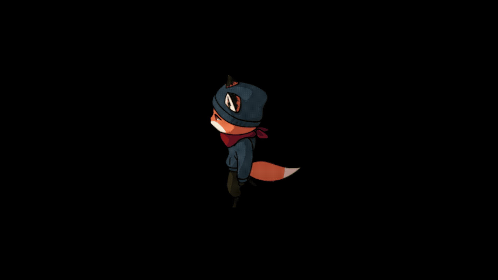
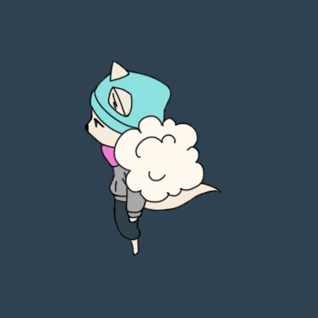

The Night Watch
Overview: This is a semester-long project I did for Game Design course, mainly responsible for designing game experience, UI components, interfaces, character and animation.
Role: UX Design, Graphic Design
Tool Kits: Figma, Photoshop, Illustrator, FinalCutPro
Timeline: Feb 2020 - May 2020 (remote since Mar)
Team: 5 programmers, 3 designers
00. Prologue
The bustling city of Wuffalo has only one problem: art theft rates are going through the roof... Things may look grim, but fortunately, THE DOGS ARE IN THE HAUS. Plan defenses to secure the museum and protect the museum’s precious artifacts of the past.
Take the role of head of security and strategically place guards during the day to catch art thieves at night. The flashlights of the guards will reveal the thieves, but will you be fast enough to catch them?
Watch the trailer I made for the game ↓
01. High semantic statement
Players take the role of head of security and plan the defenses of Wuffalo’s art museum. They must direct a pack of security guard dogs to patrol the museum and protect the museum’s precious artifacts of the past. Players will have to do their best to secure the museum and keep the artwork safe from thieves.
Players will strategically place their guards in the daytime to catch the thieves red-handed at nighttime. The flashlights of the guards will reveal the thieves, but will players be fast enough to catch them?
Here is the quickstart guide I designed for the game:
02. UX design
Throughout the project, I led the UX design of the game and mainly designed menu screens and gameplay UI. Since The Night Watch utilizes anthropomorphism and the game wants to bring relaxing mood to players, I wanted to deliver immersive and authentic game experience with minimal UI element disruption during gameplay.
Menu screens
This is an example of concept art I designed to showcase the essential theme of the game - the transition from daytime to sunset to nighttime - which corresponds to different stages of the game - planning, strategizing and acting.
Start screen
Setting screen
About screen
Level selection
The story takes place at mysterious Wuffalo Museum. Therefore, we designed the level screen as a museum map. The rooms for the levels are divided into different themes, like different art galleries within an art museum. Each theme has different domain colors that will appear in the environment.
Gameplay UI
Day is a time for serene strategy. Bright warmer colors create a lively atmosphere. When the sun is shining, the environment should encourage contemplation and thoughtfulness. The danger is far away.
When night falls, the colors darken and become more mutes and the music changes to promote a sense of foreboding. The flashlights provide a few pools of light amidst the darkness. The environment should evoke a feeling of uneasy anticipation as the thieves appear and defenses are tested.
03. Graphic design
Collaborating with other two designers, I also contributed to character design and animation design utilizing Photoshop and Illustrator. Here is the process of how sketches evolved to final illustrations.
Detecting thief
Catching thief
04. Reflection
My first project working on developing and designing a desktop game from the scratch gave me completely different experience from mobile app UX design. Unlike app or website design, which centers around solving problems and follows certain framework, game UX design requires more creativity and demands more visual complexity. I was heavily focused on ensuring players know what they are able to do, constantly providing informative feedback and delivering an attractive and satisfying game experience.
I also learned how to collaborate with a cross-functional team remotely. Due to COVID-19 disruption, we started working remotely in mid-March. Remote work taught me how to effectively communicate with developers and holding everyone accountable for making progress.
view other projects